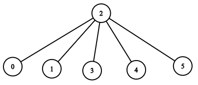

1376. 通知所有员工所需的时间
manager 反建成父→下属的树，从根 DFS：每人到达时刻 = 父到达时刻 + informTime[父]，取最大。
思路
manager是「父指针」，先反建成children邻接表，消息从headID沿树往下传。- 员工
v的到达时刻 = 父的到达时刻 +informTime[父]；用显式栈 DFS（n可达 10⁵，递归会爆栈）。 - 答案 = 所有员工到达时刻的最大值：最后知道消息的那个人决定总时长。
图解
最优解
1import java.util.*;2 3class Solution {4 public int numOfMinutes(int n, int headID, int[] manager, int[] informTime) {5 // children[u]：u 的直属下属（manager 是父指针，先反过来建邻接表）6 List<List<Integer>> children = new ArrayList<>();7 for (int i = 0; i < n; i++) children.add(new ArrayList<>());8 for (int i = 0; i < n; i++) if (manager[i] >= 0) children.get(manager[i]).add(i);9 int ans = 0;10 // 显式栈代替递归：元素 = [员工, 消息传到他手里的时刻]11 Deque<int[]> stack = new ArrayDeque<>();12 stack.push(new int[]{headID, 0});13 while (!stack.isEmpty()) {14 int[] cur = stack.pop();15 int u = cur[0], t = cur[1]; // t：消息到达 u 的时刻16 ans = Math.max(ans, t); // 最后一个知道消息的人决定总时长17 for (int v : children.get(u)) stack.push(new int[]{v, t + informTime[u]});18 }19 return ans;20 }21}题目
公司里有 n 名员工，每个员工的 ID 都是独一无二的，编号从 0 到 n - 1。公司的总负责人通过 headID 进行标识。
在 manager 数组中，每个员工都有一个直属负责人，其中 manager[i] 是第 i 名员工的直属负责人。对于总负责人，manager[headID] = -1。题目保证从属关系可以用树结构显示。
公司总负责人想要向公司所有员工通告一条紧急消息。他将会首先通知他的直属下属们，然后由这些下属通知他们的下属，直到所有的员工都得知这条紧急消息。
第 i 名员工需要 informTime[i] 分钟来通知它的所有直属下属（也就是说在 informTime[i] 分钟后，他的所有直属下属都可以开始传播这一消息）。
返回通知所有员工这一紧急消息所需要的 分钟数 。
示例 1：
输入：n = 1, headID = 0, manager = [-1], informTime = [0] 输出：0 解释：公司总负责人是该公司的唯一一名员工。
示例 2：

输入：n = 6, headID = 2, manager = [2,2,-1,2,2,2], informTime = [0,0,1,0,0,0] 输出：1 解释：id = 2 的员工是公司的总负责人，也是其他所有员工的直属负责人，他需要 1 分钟来通知所有员工。 上图显示了公司员工的树结构。
提示：
1 <= n <= 10^50 <= headID < nmanager.length == n0 <= manager[i] < nmanager[headID] == -1informTime.length == n0 <= informTime[i] <= 1000- 如果员工
i没有下属，informTime[i] == 0。 - 题目 保证 所有员工都可以收到通知。
题面取自力扣当前版本。
数据快照 2026-11-04。题面版权归力扣所有，本站点仅供本人学习使用，请勿对外发布。